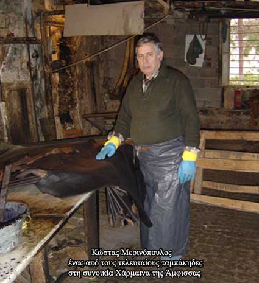

| «Σήμερα έχουν απομείνει τρεις ταμπάκηδες», μαρτυρία του ταμπάκη Κώστα Μερινόπουλου  «Σήμερα έχουν απομείνει τρεις ταμπάκηδες. Κι αυτοί συνεχίζουν τη δουλειά περισσότερο για λόγους τιμής, αφού το επάγγελμα είναι παραδοσιακό. Το έχουν κληρονομήσει από τους γονείς τους, όπως κι αυτοί το είχαν κληρονομήσει από τους δικούς τους γονείς. Το δέρμα σταμάτησε να πουλάει, δεν το αγοράζουν πια ούτε αυτοί που ασχολούνται με τη βιβλιοδεσία ή με τουριστικά είδη ούτε αυτοί που φτιάχνουν σαμάρια και λαιμαριές για ζώα. Προτιμούν το εισαγόμενο, συνθετικό δέρμα από την Τσεχία ή την Ιαπωνία. Σήμερα μόνο τρία μαγαζιά ασχολούνται με το δέρμα. Στη δεκαετία του ’80 ήταν τριάντα και παλαιότερα εβδομήντα-ογδόντα» Μαρτυρία του ταμπάκη (βυρσοδέψη) κ. Κώστα Μερινόπουλου |
||